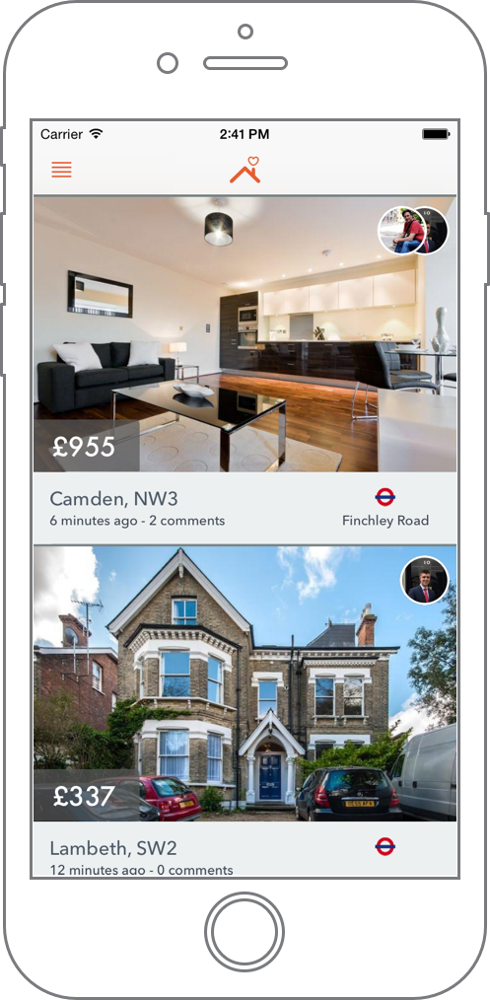
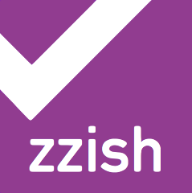
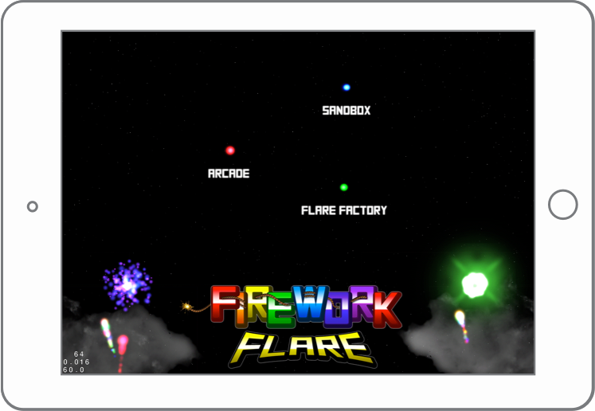
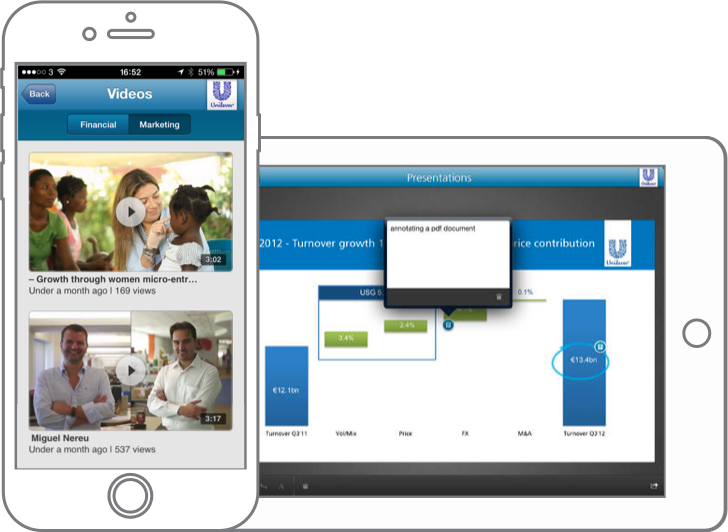

HouseQuest 2014
HouseQuest is a real-time and fully available property search application with a focus on groups. Search London together by letting relevant properties be sent to you.
CONTRIBUTION
I fully designed and built the iOS application from scratch along with the app preview video. I also built several Rails websites to test hypotheses before settling on this final version.


Zzish iOS SDK 2014
Zzish is democratising educational app development with powerful plug and play features for developers.
CONTRIBUTION
I was the primary lead on the iOS SDK during my time at Zzish, helping refactor the SDK whilst implementing new features such as custom token-based authentication. I also worked on several demo applications, documentation and full unit-test coverage.

Firework Flare 2012
Firework Flare is a cocos2d iPad game, and the first iOS app I ever released. The aim is to chain fireworks together of the same colour to gain combos and power-ups.
CONTRIBUTION
I built and designed the entire application, which included integating the cocos2d game with a UIKit In-app purchases store. Effort went into optimising the game for the iPad 1 and 2. For example, the fireworks are contained in an object pool to remove expensive allocations from happening during the game.


One Degree2013
One Degree is a freelance application I built that you can use to navigate to wherever on Earth you need to find someone to take a photo, shoot a video or anything else you need done.
CONTRIBUTION
I built the entire application using standard UIKit controls. It features a Parse backend for login and querying users by their location. I made use of several third-party libaries, such as libPhoneNumber to validate phone numbers from any country.

Unilever Investor2012
Unilever Investor Centre allows investors to keep up to date with how well Unilever is performing.
CONTRIBUTION
I added YouTube video functionality and PDF drawing and writing annotations. YouTube videos were brought down from Unilever's youtube channel and streamed directly in the application. PDF annotations were added to their presentations whereby it became possible to draw lines or leave text-based comments on screen, which reacted to zoom-levels.

OTHER APPS
Safety Tracker is a universal application I built for a freelance client. It involved translating a photoshop design into a mock-up prototype to show customers.
XO is a tic-tac-toe game I worked on at Zzish. I built, and unit tested the none-UI elements of the application. This included game logic and cross-network multiplayer functionality using the Zzish SDK.
Huntzz is a treasure hunt application I worked on for a freelance client. I added the ability to answer questions with multiple choice answers.
WHAT PEOPLE SAY
"I've had the distinct pleasure of working with Chris for my first ever iOS app and I can honestly say that he has made the entire experience fun and exciting. Chris was proactive with making suggestions to streamline my app and he always kept me in the loop with where we were at with the development. Ive already got the next app lined up and am looking forward to working with Chris again."
Daniel Hollands, Safety Tracker
"I worked with Chris on the iOS SDK and iOS application development at Zzish. He's a very talented iOS developer with a good sense for design. We've developed multiple applications together and the experience was great. I can recommend Chris for his ability to imagine and implement an app from an idea to a working product all on his own."
Morgan Wilde, colleague at Zzish